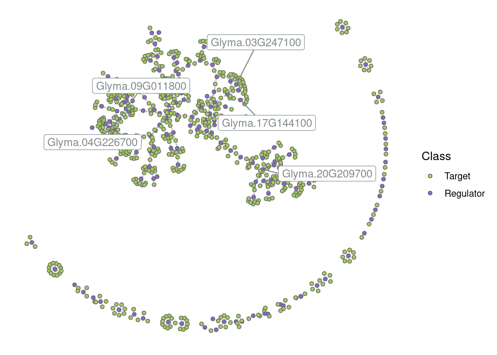
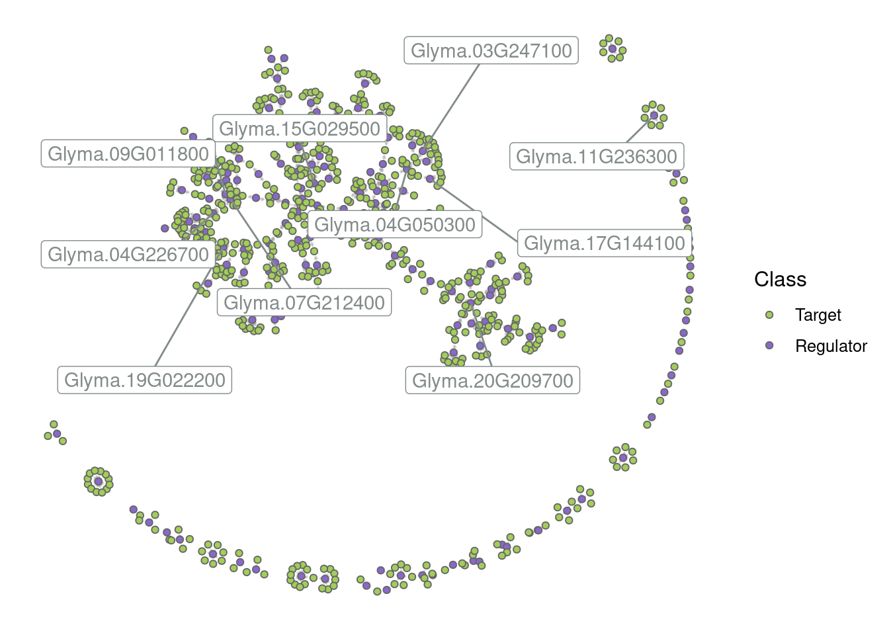
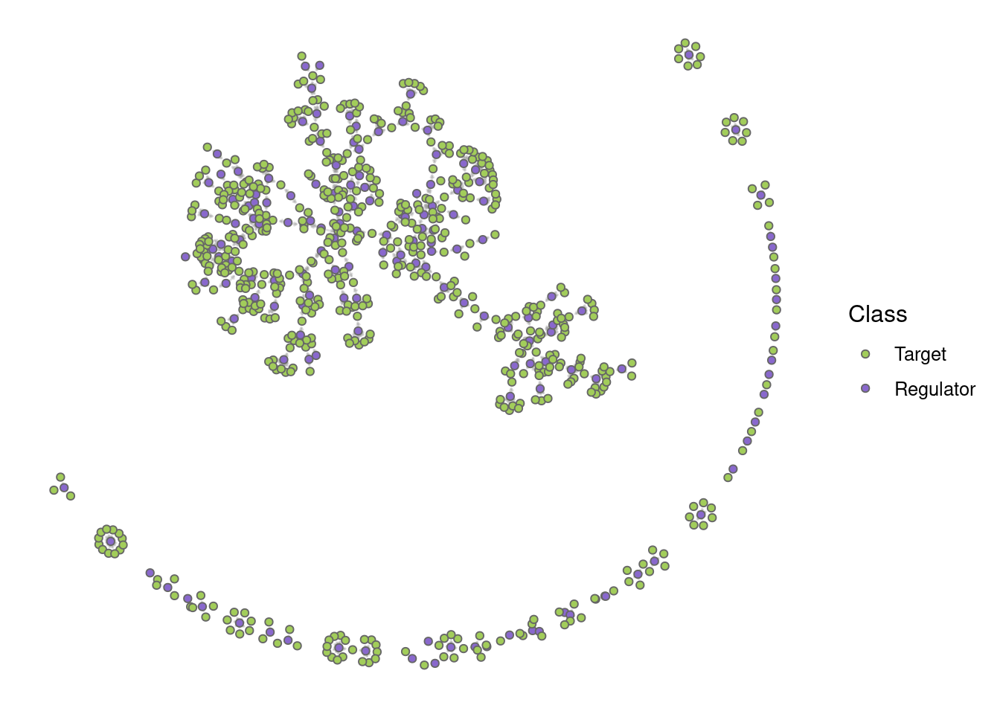
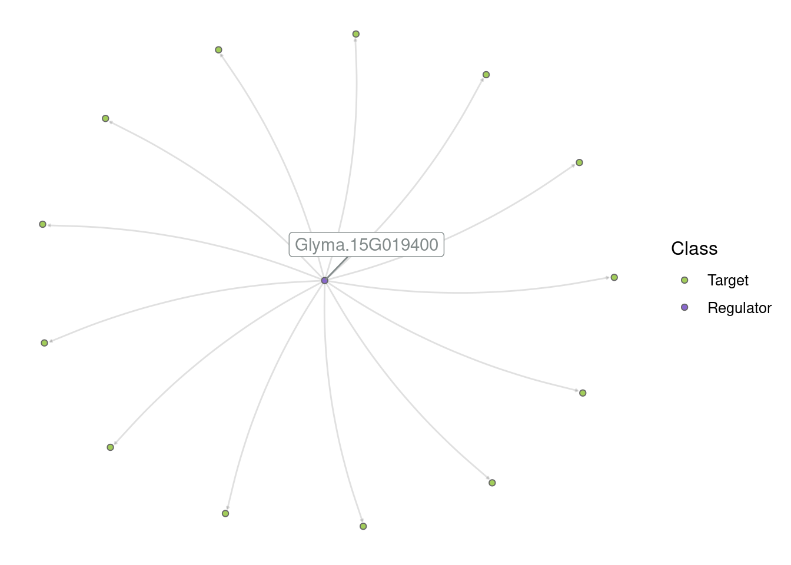
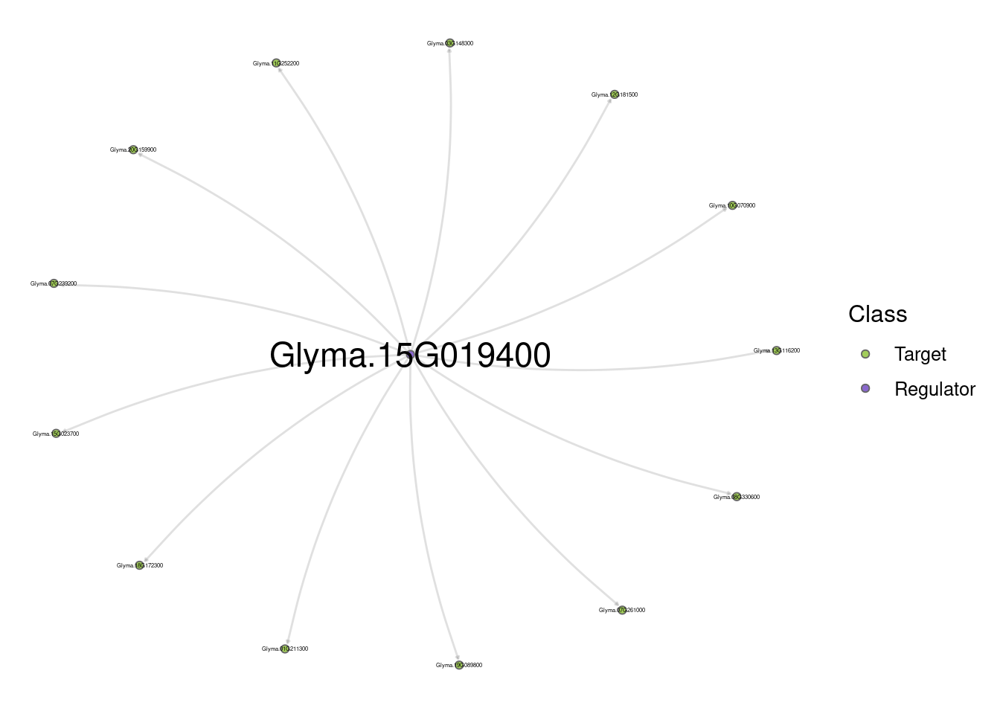
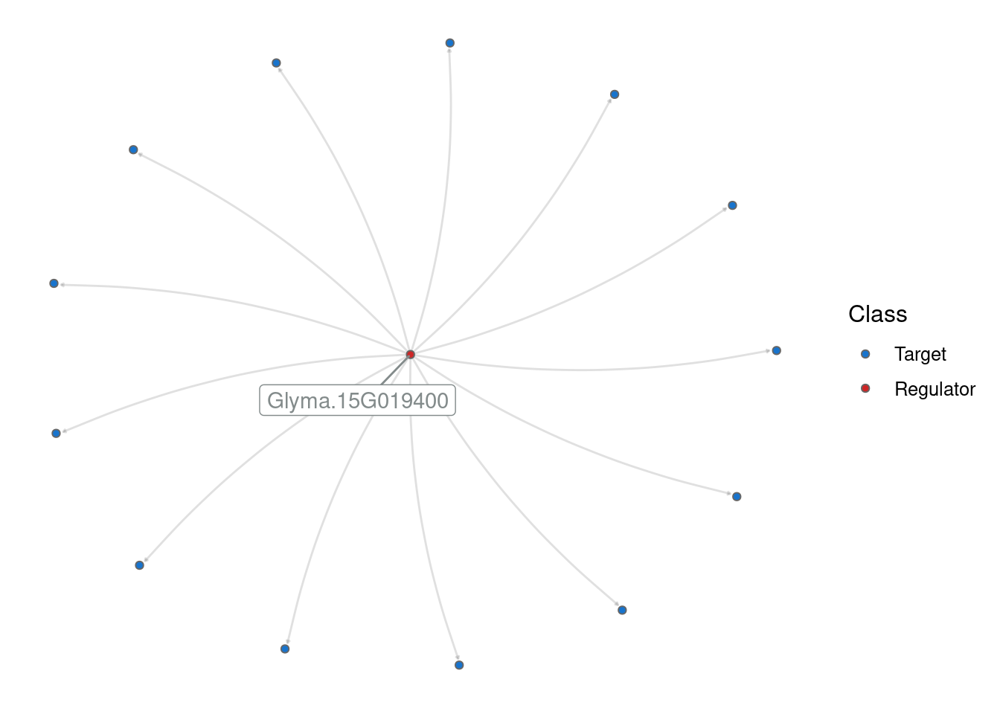
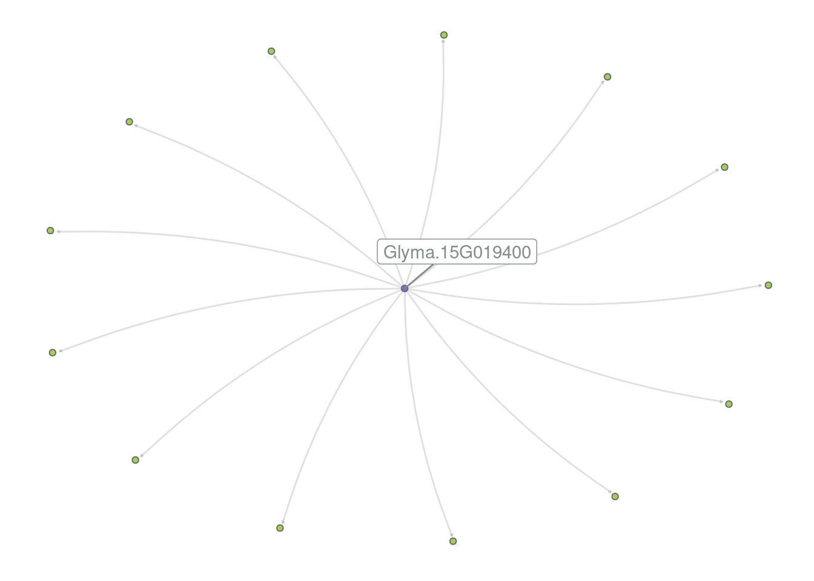

set.seed(123) # for reproducibility
# Load required packages
library(tidyverse)
library(BioNERO)
library(SummarizedExperiment)
library(here)4 Inference and analysis of gene regulatory networks (GRNs)
In this lesson, you will learn how to infer gene regulatory networks (GRNs) from bulk RNA-seq data. At the end of the lesson, you will be able to:
- infer GRNs using different popular algorithms
- explore GRNs to extract subgraphs of interest
- visualize GRNs
Let’s start by loading the packages we will use.
4.1 Getting to know the example data
Here, we will use an example data set available in data/se_PRJNA800609.rda in the Github repo associated with this course. This experiment comprises soybean (Glycine max) pods infected with the pathogenic fungus Colletotrichum truncatum, and data were downloaded from The Soybean Expression Atlas v2 (Almeida-Silva, Pedrosa-Silva, and Venancio 2023) using the BioProject accession PRJNA800609. The original data were generated by Zhu et al. (2022).
# Load expression data
load(here("data", "se_PRJNA800609.rda"))
# Rename object to a simpler name
exp <- se_PRJNA800609
rm(se_PRJNA800609)
# Take a look at the object
expclass: SummarizedExperiment
dim: 31422 60
metadata(0):
assays(1): ''
rownames(31422): Glyma.15G153300 Glyma.15G153400 ... Glyma.09G145600
Glyma.09G145700
rowData names(0):
colnames(60): SAMN25263487 SAMN25263488 ... SAMN25263525 SAMN25263526
colData names(4): Part Cultivar Treatment TimepointWe will also use soybean transcription factors obtained from PlantTFDB 4.0 (Jin et al. 2016), which are stored in data/gma_tfs.rda.
# Load transcription factors
load(here("data", "gma_tfs.rda"))
head(gma_tfs)[1] "Glyma.10G204400" "Glyma.02G099500" "Glyma.20G186200" "Glyma.01G087500"
[5] "Glyma.20G247300" "Glyma.01G000600"length(gma_tfs)[1] 37474.2 GRN inference
To infer GRNs, we need two input objects:
- A gene expression matrix (or a
SummarizedExperimentobject) - A vector of known regulators (e.g., TFs).
First, let’s preprocess our expression data with exp_preprocess(). Here, for the sake of demonstration, we will only use the top 2000 genes with the highest variances.
# Preprocess the input data
final_exp <- exp_preprocess(
exp,
min_exp = 5,
variance_filter = TRUE,
n = 2000
)Now we’re good to go. With BioNERO, one can infer GRNs using 3 popular algorithms: GENIE3 (huynh2010inferring?), ARACNE (Margolin et al. 2006), and CLR (Faith et al. 2007). Users can also infer GRNs using a combination of methods (a.k.a. “wisdom of the crowds” principle), which has been shown to lead to more accurate results (Marbach et al. 2012). Let’s demonstrate each of these approaches.
4.2.1 Individual algorithms
To infer GRNs using individual algorithms, you’d use the function grn_infer() and specify the method in the method parameter. Below you can find a short description of each algorithm and how to run them.
GENIE3: a regression-tree based algorithm that decomposes the prediction of GRNs for n genes into n regression problems. For each regression problem, the expression profile of a target gene is predicted from the expression profiles of all other genes using random forests (default) or extra-trees.
# Infer a GRN with GENIE3
grn_genie3 <- grn_infer(
final_exp,
method = "genie3",
regulators = gma_tfs,
1 nTrees = 10
)
head(grn_genie3)- 1
- Here, for demonstration purposes, we’re using only 10 trees, but one should use at least 1000 trees (default).
Node1 Node2 Weight
109961 Glyma.20G209700 Glyma.03G245300 0.3373682
160260 Glyma.12G216100 Glyma.07G149600 0.3122377
105394 Glyma.02G217800 Glyma.03G189100 0.2984574
211825 Glyma.16G012600 Glyma.14G201800 0.2816710
186303 Glyma.06G034000 Glyma.13G149100 0.2773383
51236 Glyma.11G049300 Glyma.19G121600 0.2736725ARACNE: information-theoretic algorithm that aims to remove indirect interactions inferred by coexpression.
# Infer a GRN with ARACNE
grn_aracne <- grn_infer(
final_exp,
method = "aracne",
regulators = gma_tfs
)
head(grn_aracne) Node1 Node2 Weight
70935 Glyma.20G209700 Glyma.01G037200 1.728753
89918 Glyma.04G226700 Glyma.02G149600 1.643472
238984 Glyma.07G212400 Glyma.10G224500 1.623464
211176 Glyma.07G212400 Glyma.14G195200 1.607392
91633 Glyma.20G209700 Glyma.02G195300 1.552133
290894 Glyma.04G226700 Glyma.09G143800 1.542347CLR: extension of the relevance networks algorithm that uses mutual information to identify regulatory interactions.
# Infer a GRN with CLR
grn_clr <- grn_infer(
final_exp,
method = "clr",
regulators = gma_tfs
)
head(grn_clr) Node1 Node2 Weight
260329 Glyma.15G152000 Glyma.12G009200 14.83700
154366 Glyma.19G260900 Glyma.07G049400 13.98161
197182 Glyma.16G017400 Glyma.13G289600 13.27572
97603 Glyma.15G029500 Glyma.02G309500 12.62377
55258 Glyma.13G344700 Glyma.19G211600 12.54761
226254 Glyma.16G017400 Glyma.09G227100 12.49256Note that these functions return a fully connected graph, so you’ll need to filter the edge list to remove spurious edges. One way to do it is by removing edges below a particular value for the Weight variable. However, since choosing a cut-off is not straightforward and often arbitrary, you can use the function grn_filter() to perform a graph-based filtering. Briefly, this function splits the network in N subnetworks of increasing size and calculates the scale-free topology fit for each subgraph. In the end, the subgraph with the best scale-free topology fit will be chosen as the optimum.
This is how you can use it:
# Filter the GENIE3-derived GRN based on optimal SFT fit
filtered_grn <- grn_filter(grn_genie3)
head(filtered_grn) Node1 Node2
109961 Glyma.20G209700 Glyma.03G245300
160260 Glyma.12G216100 Glyma.07G149600
105394 Glyma.02G217800 Glyma.03G189100
211825 Glyma.16G012600 Glyma.14G201800
186303 Glyma.06G034000 Glyma.13G149100
51236 Glyma.11G049300 Glyma.19G121600
Practice
- Filter the GRN obtained with GENIE3 to keep only edges with weight $$0.2. Then, answer the questions below:
- What is the top TF in number of targets?
- What genes are regulated by the top TF?
- What is the rank of the edge Glyma.07G212400 -> Glyma.10G224500 in all three networks? What is the mean rank?
4.2.2 Wisdom of the crowds
The “wisdom of the crowds” principle consists in combining inferences from multiple methods to obtain robust and more accurate predictions. As Marbach et al. (2012) stated in their paper:
We observe that no single inference method performs optimally across all datasets. In contrast, integration of predictions from multiple inference methods shows robust and high performance across diverse datasets.
In BioNERO, this is performed by computing average edge ranks across different networks, exactly as you did in the previous practice problem, and it can be executed with the function exp2grn(). After computing average ranks for each edge, exp2grn() sorts the edges based on ranks (in increasing order) and uses the graph-based filtering approach (as in grn_filter()) to remove spurious edges.
# Infer GRN
grn <- exp2grn(
exp = final_exp,
regulators = gma_tfs,
nTrees = 10 # again, using only 10 trees for demonstration purposes
)
head(grn) Regulator Target
376 Glyma.04G226700 Glyma.02G149600
2474 Glyma.20G209700 Glyma.01G037200
260 Glyma.03G247100 Glyma.02G022000
2020 Glyma.17G144100 Glyma.04G228400
1403 Glyma.12G117000 Glyma.11G137300
1056 Glyma.09G011800 Glyma.09G143800
Practice
Explore the output of the GRN inferred with exp2grn() and answer the following questions.
- What regulator has the greatest number of targets?
- What genes are regulated by the top regulator?
- What is the minimum, maximum, mean, and median number of regulators per target?
4.3 GRN analyses
After you have a GRN, there are many things you can do with it. The downstream analyses you should do will really depend on the question you’re trying to address. Nevertheless, in this section you will see examples of common analyses people do, but keep in mind that these are not the only ones; you can (and should) be creative and explore different aspects of the GRN based on your research project.
4.3.1 Finding GRN hubs
Finding hubs in GRNs is a very common practice in publications, and the goal here is to identify the so-called master regulators of particular biological processes.
This can be performed with the function get_hubs_grn(), which returns the top 10% regulators (adjustable) based on degree.
# Find GRN hubs
grn_hubs <- get_hubs_grn(grn)
head(grn_hubs) Gene Degree
1 Glyma.15G019400 13
2 Glyma.05G103300 12
3 Glyma.20G006400 12
4 Glyma.20G051500 12
5 Glyma.20G209700 11
6 Glyma.19G022200 11
Practice
What is the minimum, maximum, mean, and median degree for GRN hubs?
4.3.2 Exploring and visualizing GRNs
Another common analysis is to extract subgraphs for a particular group of genes (usually known to be involved in a process of interest) and plot them.
First, let’s plot the entire network. This is feasible here because we specifically filtered the expression data to have a small network (for demonstration purposes), but it is often not feasible in real-world networks.
# Plot the entire network
p_all <- plot_grn(grn)
p_all
By default, only the top 5 hubs are labeled, but you can change that based on your preferences. For example:
# Label the top 10 hubs
plot_grn(grn, top_n_hubs = 10)
# Hide all labels
plot_grn(grn, show_labels = "none")
Now, we will visualize the subgraph for the top hub and its targets. You can do that by filtering the edge list to keep only edges containing the gene(s) you’re interested (here, the top hub).
# Keep only edges containing the top hub
top_hub <- grn_hubs$Gene[1]
edges_top_hub <- grn[grn$Regulator == top_hub, ]
head(edges_top_hub) Regulator Target
1789 Glyma.15G019400 Glyma.19G089800
1785 Glyma.15G019400 Glyma.13G116200
1770 Glyma.15G019400 Glyma.01G211300
1783 Glyma.15G019400 Glyma.11G252200
1779 Glyma.15G019400 Glyma.08G330600
1781 Glyma.15G019400 Glyma.10G070900# Visualize the subgraph
plot_grn(edges_top_hub)
With smaller subgraphs, it’s nice to play with parameters in plot_grn() to customize your visualization. For example:
# Show all nodes
plot_grn(edges_top_hub, show_labels = "all")
Finally, since the output of plot_grn() is a ggplot object (same for plot_gcn() and plot_ppi()), you can store it in an object and modify it later. For example:
p_grn <- plot_grn(edges_top_hub)
# Change colors of regulators and targets
p_grn +
scale_fill_manual(values = c("dodgerblue3", "firebrick3"))
# Remove legend
p_grn +
theme(legend.position = "none")
Practice
Create a subgraph with the top 10 hubs and their targets. Then, create different network visualizations based on the following instructions:
Network 1: Default parameters in plot_grn()
Network 2: Label all hubs.
Network 3: Label all hubs and change node colors (the fill aesthetics) so that regulators have the colors “black” and targets have the color “grey70”.
Network 4: Label all hubs and add the following plot title: “Network representation of the top 10 hubs and their targets”
Network 5: Label all hubs, change the network layout function to with_gem, and move the legend to the bottom of the plot.
Session information
This chapter was created under the following conditions:
─ Session info ───────────────────────────────────────────────────────────────
setting value
version R version 4.3.0 (2023-04-21)
os Ubuntu 20.04.5 LTS
system x86_64, linux-gnu
ui X11
language (EN)
collate en_US.UTF-8
ctype en_US.UTF-8
tz Europe/Brussels
date 2023-09-09
pandoc 3.1.1 @ /usr/lib/rstudio/resources/app/bin/quarto/bin/tools/ (via rmarkdown)
─ Packages ───────────────────────────────────────────────────────────────────
package * version date (UTC) lib source
abind 1.4-5 2016-07-21 [1] CRAN (R 4.3.0)
annotate 1.78.0 2023-04-25 [1] Bioconductor
AnnotationDbi 1.62.0 2023-04-25 [1] Bioconductor
backports 1.4.1 2021-12-13 [1] CRAN (R 4.3.0)
base64enc 0.1-3 2015-07-28 [1] CRAN (R 4.3.0)
Biobase * 2.60.0 2023-04-25 [1] Bioconductor
BiocGenerics * 0.46.0 2023-04-25 [1] Bioconductor
BiocParallel 1.34.0 2023-04-25 [1] Bioconductor
BioNERO * 1.9.7 2023-08-23 [1] Bioconductor
Biostrings 2.68.0 2023-04-25 [1] Bioconductor
bit 4.0.5 2022-11-15 [1] CRAN (R 4.3.0)
bit64 4.0.5 2020-08-30 [1] CRAN (R 4.3.0)
bitops 1.0-7 2021-04-24 [1] CRAN (R 4.3.0)
blob 1.2.4 2023-03-17 [1] CRAN (R 4.3.0)
cachem 1.0.8 2023-05-01 [1] CRAN (R 4.3.0)
checkmate 2.2.0 2023-04-27 [1] CRAN (R 4.3.0)
circlize 0.4.15 2022-05-10 [1] CRAN (R 4.3.0)
cli 3.6.1 2023-03-23 [1] CRAN (R 4.3.0)
clue 0.3-64 2023-01-31 [1] CRAN (R 4.3.0)
cluster 2.1.4 2022-08-22 [4] CRAN (R 4.2.1)
coda 0.19-4 2020-09-30 [1] CRAN (R 4.3.0)
codetools 0.2-19 2023-02-01 [4] CRAN (R 4.2.2)
colorspace 2.1-0 2023-01-23 [1] CRAN (R 4.3.0)
ComplexHeatmap 2.16.0 2023-04-25 [1] Bioconductor
crayon 1.5.2 2022-09-29 [1] CRAN (R 4.3.0)
data.table 1.14.8 2023-02-17 [1] CRAN (R 4.3.0)
DBI 1.1.3 2022-06-18 [1] CRAN (R 4.3.0)
DelayedArray 0.26.1 2023-05-01 [1] Bioconductor
digest 0.6.33 2023-07-07 [1] CRAN (R 4.3.0)
doParallel 1.0.17 2022-02-07 [1] CRAN (R 4.3.0)
dplyr * 1.1.2 2023-04-20 [1] CRAN (R 4.3.0)
dynamicTreeCut 1.63-1 2016-03-11 [1] CRAN (R 4.3.0)
edgeR 3.42.0 2023-04-25 [1] Bioconductor
evaluate 0.21 2023-05-05 [1] CRAN (R 4.3.0)
fansi 1.0.4 2023-01-22 [1] CRAN (R 4.3.0)
farver 2.1.1 2022-07-06 [1] CRAN (R 4.3.0)
fastcluster 1.2.3 2021-05-24 [1] CRAN (R 4.3.0)
fastmap 1.1.1 2023-02-24 [1] CRAN (R 4.3.0)
forcats * 1.0.0 2023-01-29 [1] CRAN (R 4.3.0)
foreach 1.5.2 2022-02-02 [1] CRAN (R 4.3.0)
foreign 0.8-82 2022-01-13 [4] CRAN (R 4.1.2)
Formula 1.2-5 2023-02-24 [1] CRAN (R 4.3.0)
genefilter 1.82.0 2023-04-25 [1] Bioconductor
generics 0.1.3 2022-07-05 [1] CRAN (R 4.3.0)
GENIE3 1.22.0 2023-04-25 [1] Bioconductor
GenomeInfoDb * 1.36.0 2023-04-25 [1] Bioconductor
GenomeInfoDbData 1.2.10 2023-04-28 [1] Bioconductor
GenomicRanges * 1.52.0 2023-04-25 [1] Bioconductor
GetoptLong 1.0.5 2020-12-15 [1] CRAN (R 4.3.0)
ggdendro 0.1.23 2022-02-16 [1] CRAN (R 4.3.0)
ggnetwork 0.5.12 2023-03-06 [1] CRAN (R 4.3.0)
ggplot2 * 3.4.1 2023-02-10 [1] CRAN (R 4.3.0)
ggrepel 0.9.3 2023-02-03 [1] CRAN (R 4.3.0)
GlobalOptions 0.1.2 2020-06-10 [1] CRAN (R 4.3.0)
glue 1.6.2 2022-02-24 [1] CRAN (R 4.3.0)
GO.db 3.17.0 2023-05-02 [1] Bioconductor
gridExtra 2.3 2017-09-09 [1] CRAN (R 4.3.0)
gtable 0.3.3 2023-03-21 [1] CRAN (R 4.3.0)
here * 1.0.1 2020-12-13 [1] CRAN (R 4.3.0)
Hmisc 5.0-1 2023-03-08 [1] CRAN (R 4.3.0)
hms 1.1.3 2023-03-21 [1] CRAN (R 4.3.0)
htmlTable 2.4.1 2022-07-07 [1] CRAN (R 4.3.0)
htmltools 0.5.5 2023-03-23 [1] CRAN (R 4.3.0)
htmlwidgets 1.6.2 2023-03-17 [1] CRAN (R 4.3.0)
httr 1.4.5 2023-02-24 [1] CRAN (R 4.3.0)
igraph 1.4.2 2023-04-07 [1] CRAN (R 4.3.0)
impute 1.74.0 2023-04-25 [1] Bioconductor
intergraph 2.0-2 2016-12-05 [1] CRAN (R 4.3.0)
IRanges * 2.34.0 2023-04-25 [1] Bioconductor
iterators 1.0.14 2022-02-05 [1] CRAN (R 4.3.0)
jsonlite 1.8.7 2023-06-29 [1] CRAN (R 4.3.0)
KEGGREST 1.40.0 2023-04-25 [1] Bioconductor
knitr 1.43 2023-05-25 [1] CRAN (R 4.3.0)
labeling 0.4.2 2020-10-20 [1] CRAN (R 4.3.0)
lattice 0.20-45 2021-09-22 [4] CRAN (R 4.2.0)
lifecycle 1.0.3 2022-10-07 [1] CRAN (R 4.3.0)
limma 3.56.0 2023-04-25 [1] Bioconductor
locfit 1.5-9.7 2023-01-02 [1] CRAN (R 4.3.0)
lubridate * 1.9.2 2023-02-10 [1] CRAN (R 4.3.0)
magrittr 2.0.3 2022-03-30 [1] CRAN (R 4.3.0)
MASS 7.3-58.2 2023-01-23 [4] CRAN (R 4.2.2)
Matrix 1.5-1 2022-09-13 [4] CRAN (R 4.2.1)
MatrixGenerics * 1.12.2 2023-06-09 [1] Bioconductor
matrixStats * 1.0.0 2023-06-02 [1] CRAN (R 4.3.0)
memoise 2.0.1 2021-11-26 [1] CRAN (R 4.3.0)
mgcv 1.8-41 2022-10-21 [4] CRAN (R 4.2.1)
minet 3.58.0 2023-04-25 [1] Bioconductor
munsell 0.5.0 2018-06-12 [1] CRAN (R 4.3.0)
NetRep 1.2.6 2023-01-06 [1] CRAN (R 4.3.0)
network 1.18.1 2023-01-24 [1] CRAN (R 4.3.0)
nlme 3.1-162 2023-01-31 [4] CRAN (R 4.2.2)
nnet 7.3-18 2022-09-28 [4] CRAN (R 4.2.1)
patchwork 1.1.2 2022-08-19 [1] CRAN (R 4.3.0)
pillar 1.9.0 2023-03-22 [1] CRAN (R 4.3.0)
pkgconfig 2.0.3 2019-09-22 [1] CRAN (R 4.3.0)
plyr 1.8.8 2022-11-11 [1] CRAN (R 4.3.0)
png 0.1-8 2022-11-29 [1] CRAN (R 4.3.0)
preprocessCore 1.62.0 2023-04-25 [1] Bioconductor
purrr * 1.0.1 2023-01-10 [1] CRAN (R 4.3.0)
R6 2.5.1 2021-08-19 [1] CRAN (R 4.3.0)
RColorBrewer 1.1-3 2022-04-03 [1] CRAN (R 4.3.0)
Rcpp 1.0.10 2023-01-22 [1] CRAN (R 4.3.0)
RCurl 1.98-1.12 2023-03-27 [1] CRAN (R 4.3.0)
readr * 2.1.4 2023-02-10 [1] CRAN (R 4.3.0)
reshape2 1.4.4 2020-04-09 [1] CRAN (R 4.3.0)
RhpcBLASctl 0.23-42 2023-02-11 [1] CRAN (R 4.3.0)
rjson 0.2.21 2022-01-09 [1] CRAN (R 4.3.0)
rlang 1.1.1 2023-04-28 [1] CRAN (R 4.3.0)
rmarkdown 2.23 2023-07-01 [1] CRAN (R 4.3.0)
rpart 4.1.19 2022-10-21 [4] CRAN (R 4.2.1)
rprojroot 2.0.3 2022-04-02 [1] CRAN (R 4.3.0)
RSQLite 2.3.1 2023-04-03 [1] CRAN (R 4.3.0)
rstudioapi 0.14 2022-08-22 [1] CRAN (R 4.3.0)
S4Arrays 1.0.1 2023-05-01 [1] Bioconductor
S4Vectors * 0.38.0 2023-04-25 [1] Bioconductor
scales 1.2.1 2022-08-20 [1] CRAN (R 4.3.0)
sessioninfo 1.2.2 2021-12-06 [1] CRAN (R 4.3.0)
shape 1.4.6 2021-05-19 [1] CRAN (R 4.3.0)
statmod 1.5.0 2023-01-06 [1] CRAN (R 4.3.0)
statnet.common 4.8.0 2023-01-24 [1] CRAN (R 4.3.0)
stringi 1.7.12 2023-01-11 [1] CRAN (R 4.3.0)
stringr * 1.5.0 2022-12-02 [1] CRAN (R 4.3.0)
SummarizedExperiment * 1.30.1 2023-05-01 [1] Bioconductor
survival 3.5-3 2023-02-12 [4] CRAN (R 4.2.2)
sva 3.48.0 2023-04-25 [1] Bioconductor
tibble * 3.2.1 2023-03-20 [1] CRAN (R 4.3.0)
tidyr * 1.3.0 2023-01-24 [1] CRAN (R 4.3.0)
tidyselect 1.2.0 2022-10-10 [1] CRAN (R 4.3.0)
tidyverse * 2.0.0 2023-02-22 [1] CRAN (R 4.3.0)
timechange 0.2.0 2023-01-11 [1] CRAN (R 4.3.0)
tzdb 0.3.0 2022-03-28 [1] CRAN (R 4.3.0)
utf8 1.2.3 2023-01-31 [1] CRAN (R 4.3.0)
vctrs 0.6.3 2023-06-14 [1] CRAN (R 4.3.0)
WGCNA 1.72-1 2023-01-18 [1] CRAN (R 4.3.0)
withr 2.5.0 2022-03-03 [1] CRAN (R 4.3.0)
xfun 0.39 2023-04-20 [1] CRAN (R 4.3.0)
XML 3.99-0.14 2023-03-19 [1] CRAN (R 4.3.0)
xtable 1.8-4 2019-04-21 [1] CRAN (R 4.3.0)
XVector 0.40.0 2023-04-25 [1] Bioconductor
yaml 2.3.7 2023-01-23 [1] CRAN (R 4.3.0)
zlibbioc 1.46.0 2023-04-25 [1] Bioconductor
[1] /home/faalm/R/x86_64-pc-linux-gnu-library/4.3
[2] /usr/local/lib/R/site-library
[3] /usr/lib/R/site-library
[4] /usr/lib/R/library
──────────────────────────────────────────────────────────────────────────────References
Almeida-Silva, Fabricio, Francisnei Pedrosa-Silva, and Thiago M Venancio. 2023. “The Soybean Expression Atlas V2: A Comprehensive Database of over 5000 RNA-Seq Samples.” bioRxiv, 2023–04.
Faith, Jeremiah J, Boris Hayete, Joshua T Thaden, Ilaria Mogno, Jamey Wierzbowski, Guillaume Cottarel, Simon Kasif, James J Collins, and Timothy S Gardner. 2007. “Large-Scale Mapping and Validation of Escherichia Coli Transcriptional Regulation from a Compendium of Expression Profiles.” PLoS Biology 5 (1): e8.
Jin, Jinpu, Feng Tian, De-Chang Yang, Yu-Qi Meng, Lei Kong, Jingchu Luo, and Ge Gao. 2016. “PlantTFDB 4.0: Toward a Central Hub for Transcription Factors and Regulatory Interactions in Plants.” Nucleic Acids Research, gkw982.
Marbach, Daniel, James C Costello, Robert Küffner, Nicole M Vega, Robert J Prill, Diogo M Camacho, Kyle R Allison, Manolis Kellis, James J Collins, et al. 2012. “Wisdom of Crowds for Robust Gene Network Inference.” Nature Methods 9 (8): 796–804.
Margolin, Adam A, Ilya Nemenman, Katia Basso, Chris Wiggins, Gustavo Stolovitzky, Riccardo Dalla Favera, and Andrea Califano. 2006. “ARACNE: An Algorithm for the Reconstruction of Gene Regulatory Networks in a Mammalian Cellular Context.” In BMC Bioinformatics, 7:1–15. 1. BioMed Central.
Zhu, Longming, Qinghua Yang, Xiaomin Yu, Xujun Fu, Hangxia Jin, and Fengjie Yuan. 2022. “Transcriptomic and Metabolomic Analyses Reveal a Potential Mechanism to Improve Soybean Resistance to Anthracnose.” Frontiers in Plant Science 13: 850829.